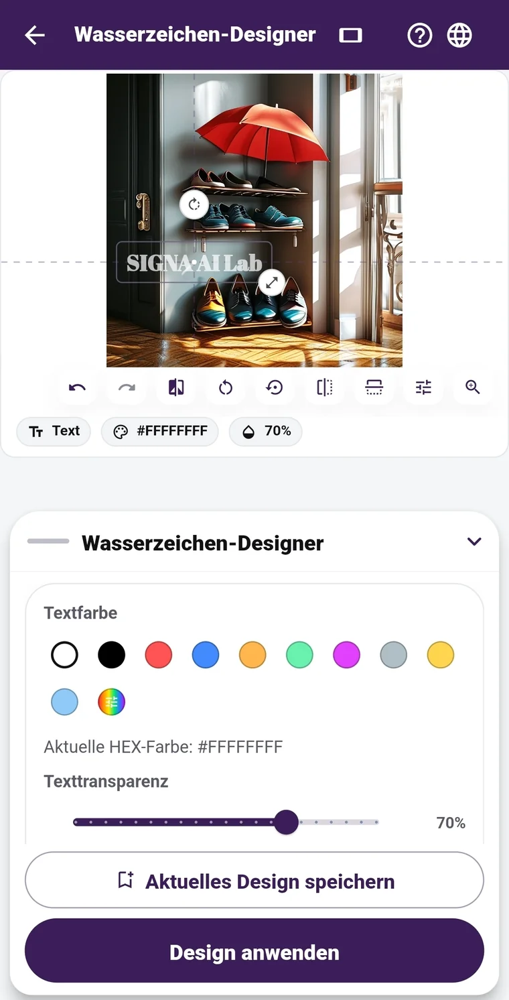

01 · PROTECT
Ein Wasserzeichen, das zum Motiv passt.
Der Designer bietet für Hoch- und Querformat eine passende Arbeitsansicht. Schriftart, Farbe, Größe, Deckkraft und Position von Text oder Logo bestimmst du selbst. Die Basisfunktionen sind kostenlos: Bearbeite bis zu zwölf Fotos in einem Durchgang, platziere die Markierung auf jedem Bild einzeln und speichere Vorlagen für später. Mit Pro kannst du zusätzliche Schriftarten herunterladen. Das unsichtbare SIGNA-Signal wird nur dann zusammen mit dem sichtbaren Wasserzeichen eingebettet, wenn du die entsprechende Option einschaltest.
Kostenlose Grundfunktionen · Hoch- und Querformat · Bis zu zwölf Fotos · Position pro Bild · Gespeicherte Vorlagen · Zusätzliche Pro-Schriften
Wie wählst du ein Wasserzeichen vor dem Teilen? →